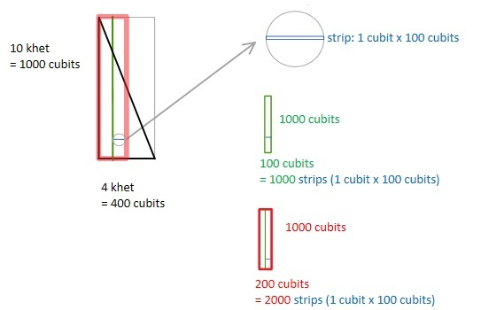
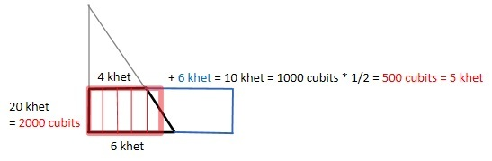
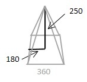
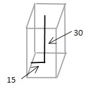

| XXX | X | 1 | 20 |
| XXX XXX |
X X |
2 | 21 |
| XXX XXX XXX XXX |
X X X X |
4 | 22 |
Note the use of binary [10].
Account for the remainder:
| mod(3) = 2
plus 2/3, 1/3, 1/6, 1/12, 1/ 24 |
2/3, 1/3 (1/30, 1/6 1/60) | mod(3) = 0 2/3 |
mod(7) = 0 1 / (4 * 1/7) |
mod(5) = 0 1 / (3 * 1/5) |
1/10,1/20,1/40 | 1/2,1/4,1/8 | exceptions | |
| 3 | 2/3 | 2/3 = 2 1/2 = 1 1/2 <<< |
||||||
| 2 = 6 1/6 = 1/2 <<<[13] |
||||||||
| 5 | 2/3
= 3 1/3 1/3 = 1 2/3 |
NA | NA | 1/3 = 1 2/3 <<< | NA 1/10 = 1/2 |
|||
| 2 10 3 15 1/15 (1/3) <<< |
1/15 | |||||||
| 7 | 2/3
= 4 2/3 1/3 = 2 1/3 1/6 = 1 1/6 |
1/4 = 1 1/2 1/4 | 1/2
= 3 1/2 1/4 = 1 1/2 1/4 |
|||||
| 2 = 14 1/14 = 1/2 <<< 3 = 21 1/21 = 1/3 <<< |
1/28 = 1/4 <<< | 2
= 14 4 = 28 1/28 = 1/4 <<< |
||||||
| 9 | 2/3
= 6 1/3 = 3 1/6 = 1 1/2 |
2/3
= 6 1/6 = 1 1/2 <<< |
||||||
| 2 = 18 1/18 = 1/2 <<< |
1/18 <<< | |||||||
| 11 | 2/3
= 7 1/3 1/3 = 3 2/3 1/6 = 1 1/2 1/3 |
|||||||
| 2 = 22 4 = 44 6 = 66 1/66 = 1/6 <<< |
||||||||
| 13 | 2/3
= 8 2/3 1/3 = 4 1/3 1/6 = 2 1/6 1/12 = 1 1/12 |
1/2
= 6 1/2 1/4 = 3 1/4 1/8 = 1 1/2 1/8 |
||||||
| 2 = 26 1/26 = 1/2 <<< 4 = 52 1/52 = 1/4 <<< 6 = 78 1/78 = 1/6 <<< |
2
= 26 4 = 52 1/52 = 1/4 <<< 8 = 104 1/104 = 1/8 <<< |
|||||||
| 15 | 2/3
= 10 1/3 = 5 1/6 = 2 1/2 1/12 = 1 1/4 |
1/10 = 1 1/2 | 1/9 = 1 2/3 | 1/10 = 1 1/2 | ||||
| 2 = 30 1/30 = 1/2 <<< 4 = 60 1/60 = 1/4 <<< |
1/30 = 1/2 <<< | 2
= 30 3 = 45 1/45 = 1/3 <<< |
2
= 30 1/30 = 1/2 <<< |
|||||
| 17 | 2/3
= 11 1/3 1/3 = 5 2/3 1/6 = 2 1/2 1/3 1/12 = 1 1/4 1/6 |
|||||||
| 2 = 34 3 = 51 1/51 = 1/3 <<< 4 = 68 1/68 = 1/4 <<< |
||||||||
| 19 | 2/3
= 12 2/3 1/3 = 6 1/3 1/6 = 3 1/6 1/12 = 1 1/2 1/12 |
|||||||
| 2 = 38 4 = 76 1/76 = 1/4 <<< 6 = 114 1/114 = 1/6 <<< |
||||||||
| 21 | 2/3
= 14 1/14 = 1 1/2 |
1/12 = 1 1/2 1/4 | ||||||
| 2
= 42 1/42 = 1/2 <<< |
2
= 42 4 = 84 1/84 = 1/4 <<< |
|||||||
| 23 | 2/3
= 15 1/3 1/3 = 7 2/3 1/6 = 3 1/2 1/3 1/12 = 1 1/2 1/4 1/6 |
|||||||
| 2 = 46 10 = 230 12 = 276 1/276 = 1/12 <<< |
||||||||
| 25 | 2/3
= 16 2/3 1/3 = 8 1/3 1/6 = 4 1/6 1/12 = 2 1/12 1/24 = 1 1/24 |
1/15 = 1 2/3 | ||||||
| 2 = 50 1/50 = 1/2 <<< 3 = 75 1/75 = 1/3 <<< 4 = 100 8 = 200 1/200 = 1/8 <<< |
2
= 50 3 = 75 1/75 = 1/3 <<< |
|||||||
| 27 | 2/3
= 18 1/18 = 1 1/2 |
|||||||
| 2
= 54 1/54 = 1/2 <<< |
||||||||
| 29 | 1/24 = 1 1/6 1/24 | |||||||
| 2 = 58 1/58 = 1/2 <<< 4 = 116 6 = 174 1/174 = 1/6 <<< 8 = 232 1/232 = 1/8 <<< |
||||||||
| 31 | 1/30 = 1 1/30 | 1/20 = 1 1/2 1/20 | ||||||
| 2
= 62 1/62 = 1/2 <<< 3 = 93 1/93 = 1/3 <<< 10 = 310 1/310 = 1/10 <<< 20 = 620 30 = 930 1/930 = 1/30 <<< |
2
= 62 4 = 124 1/124 = 1/4 <<< 5 = 155 1/155 = 1/5 <<< |
|||||||
| 33 | 2/3
= 22 1/22 = 1 1/2 |
|||||||
| 2
= 66 1/66 =. 1/2 <<< |
||||||||
| 35 | 1/30 = 1 1/6 | 1/20 = 1 1/2 1/4 | 1/21 = 1 2/3 | |||||
| 6
* 35 = 210 so 6 = 1/35 * 210 and 2*6 = 2/35 * 210 so 12 = 2/35 * 210 or 2/35 * 210 = 12 so 2/35 * 210 = 7 + 5 ao 2/35 = 7/210 + 5/210 so 2/35 = 1/30 + 1/42 so remainder = 1/42 According to Chance this problem is treated as 2 * 1/35 rather than 2/35 [14] ie.
|
2
= 70 4 = 140 1/140 = 1/4 <<< |
1/105 = 1/3 <<< | ||||||
| 37 | 2/3
= 24 2/3 1/3 = 12 1/3 1/6 = 6 1/6 1/12 = 3 1/12 1/24 = 1 1/2 1/24 |
|||||||
| 2 = 74 3 = 111 1/111 = 1/3 <<< 4 = 148 8 = 296 1/296 = 1/8 <<< |
||||||||
| 39 | 2/3
= 26 1/26 = 1 1/2 |
|||||||
| 2
= 78 1/78 = 1/2 <<< |
||||||||
| 41 | 2/3
= 27 1/3 1/3 = 13 2/3 1/6 = 6 1/2 1/3 1/12 = 3 1/3 1/12 1/24 = 1 2/3 1/24 |
|||||||
| 2 = 82 4 = 164 6 = 246 1/264 = 1/6 <<< 8 = 328 1/328 = 1/8 <<< |
||||||||
| 43 | 2/3
= 28 2/3 1/3 = 14 1/3 1/6 = 7 1/6 1/12 = 3 1/2 1/12 1/24 = 1 1/2 1/4 1/24 |
1/42 = 1 1/42 | ||||||
| 2 = 86 4 = 172 6 = 258 1/258 = 1/6 <<< 8 = 344 16 = 688 24 = 1024 1/1024 = 1/24 <<< |
2
= 86 1/86 = 1/2 <<< 3 = 129 1/129 = 1/3 <<< 4 = 172 7 = 301 1/301 = 1/7 <<< |
|||||||
| 45 | 2/3
= 30 1/30 = 1 1/2 |
1/27 = 1 2/3 | ||||||
| 2
= 90 1/90 = 1/2 <<< |
2
= 90 3 = 135 1/135 = 1/3 <<< |
|||||||
| 47 | 1/30 = 1 1/2 1/15 | |||||||
| 2
= 94 3 = 141 1/141 = 1/3 <<< 10 = 470 1/470 = 1/10 <<< |
||||||||
| 49 | 2/3
= 32 2/3 1/3 = 16 1/3 1/30 = 1 1/3 1/5 1/10 |
1/28 = 1 1/2 1/4 | ||||||
| 2
= 98 4 = 196 5 = 245 1/245 = 1/5 <<< 6 = 294 1/294 = 1/6 <<< |
2
= 98 4 = 196 1/196 = 1/4 <<< |
|||||||
| 51 | 2/3
= 34 1/34 = 1 1/2 |
|||||||
| 2
= 102 1/102 = 1/2 <<< |
||||||||
| 53 | 1/30 = 1 2/3 1/10 | |||||||
| 2
= 106 4 = 112 6 = 318 1/318 = 1/6 <<< 10 = 530 5 = 265 15 = 795 1/795 = 1/15<<< |
||||||||
| 55 | 1/30 = 1 2/3 1/6 | 1/33 = 1 2/3 | ||||||
| 2
= 110 4 = 220 6 = 330 1/330 = 1/6 <<< |
3
= 165 1/165 = 1/3 <<< |
|||||||
| 57 | 2/3
= 38 1/38 = 1 1/2 |
|||||||
| 2
= 114 1/114 = 1/2 <<< |
||||||||
| 59 | 1/30 = 1 1/2 1/3 1/10 1/30 | 1/36 = 1 1/2 1/12 /18 | ||||||
| 10
= 590 20 = 1180 30 = 1770 1/1770 = 1/30 <<< |
2
= 118 4 = 236 1/236 = 1/4 <<< 8 = 472 9 = 531 1/531 = 1/9 <<< |
|||||||
| 61 | 1/60 = 1 1/60 | 1/40 = 1 1/2 1/40 | ||||||
| 2
= 122 1/122 = 1/2 <<< 2 = 183 1/183 = 1/3 <<< 10 = 610 1/610 = 1/10 <<< 20 = 1220 1/1220 = 1/20 <<< |
2
= 126 4 = 244 1/244 = 1/4 <<< 8 = 488 1/488 = 1/8 <<< 10 = 610 1/610 = 1/10 <<< |
|||||||
| 63 | 2/3
= 42 1/42 = 1 1/2 |
1/36 = 1 1/2 1/4 | ||||||
| 2
= 126 1/126 = 1/2 <<< |
2
= 126 4 = 252 1/252 = 1/4 <<< |
|||||||
| 65 | 1/60 = 1 1/12 | 1/39 = 1 2/3 | ||||||
| 2
= 130 1/130 = 1/2 <<< 4 = 260 1/260 = 1/4 <<< 6 = 390 1/390 = 1/6 <<< |
2
= 130 3 = 195 1/195 = 1/3 <<< |
|||||||
| 67 | 2/3
= 44 2/3 1/3 = 22 1/3 1/6 = 11 1/6 1/60 = 1 1/10 1/60 |
1/40 = 1 1/2 1/8 1/20 | ||||||
| 2
= 134 1/134 = 1/2 <<< 3 = 201 1/201 = 1/3 <<< 10 = 670 20 = 1340 1/1340 = 1/20 <<< |
2
= 134 4 = 268 5 = 335 1/335 = 1/5 <<< 8 = 536 1/536 = 1/8 <<< |
|||||||
| 69 | 2/3
= 46 1/46 = 1 1/2 |
|||||||
| 2
= 138 1/138 = 1/2 <<< |
||||||||
| 71 | 1/60 = 1 1/6 1/60 | 1/40 = 1 1/2 1/4 1/40 | ||||||
| 2
= 142 1/142 = 1/2 <<< 4 = 284 6 = 426 1/426 = 1/6 <<< 10 = 710 1/710 = 1/10 <<< 20 = 1420 1/1420 = 1/20 <<< |
2
= 142 4 = 284 8 = 568 1/568 = 1/8 <<< 10 = 710 1/710 = 1/10 <<< |
|||||||
| 73 | 1/60 = 1 1/6 1/20 | |||||||
| 2
= 146 3 = 219 1/219 = 1/3 <<< 4 = 292 1/292 = 1/4 <<< 5 = 365 1/365 = 1/5 <<< |
||||||||
| 75 | 2/3
= 50 1/50 = 1 1/2 |
|||||||
| 2
= 150 1/150 = 1/2 <<< |
||||||||
| 77 | 1/60 = 1 1/6 1/10 1/60 | 1/44 = 1 1/2 1/4 | ||||||
| 2
= 154 3 = 231 1/231 = 1/3 <<< 4 = 308 1/308 = 1/4 <<< 10 - 770 1/770 <<< 20 = 1540 30 = 2310 1/2310 = 1/30 <<< |
2
= 154 4 = 308 1/308 = 1/4 <<< |
|||||||
| 79 | 1/60 = 1 1/4 1/15 | |||||||
| 2
= 158 3 = 237 1/237 = 1/3 <<< 4 = 316 1/316 = 1/4 <<< 10 = 81 1/810 = 1/10 <<< |
||||||||
| 81 | 2/3
= 54 1/54 = 1 1/2 |
|||||||
| 2
= 162 1/162 = 1/2 <<< |
||||||||
| 83 | 1/60 = 1 1/3 1/20 | |||||||
| 2
= 166 4 = 332 1/332 = 1/4 <<< 5 = 415 1/415 = 1/5 <<< 6 = 498 1/498 = 1/6 <<< |
||||||||
| 85 | 1/60 = 1 1/3 1/2 | 1/51 = 1 2/3 | ||||||
| 2
= 170 3 = 255 1/255 = 1/3 <<< 4 = 340 1/340 = 1/4 <<< |
2
= 170 3 = 255 1/255 = 1/3 <<< |
|||||||
| 87 | 2/3
= 58 1/58 = 1 1/2 |
|||||||
| 2
= 174 1/174 = 1/2 <<< |
||||||||
| 89 | 1/60 = 1 1/3 1/10 1/20 | |||||||
| 2
= 178 4 = 356 1/356 = 1/4 <<< 6 = 534 1/534 = 1/6 <<< 10 = 890 1/890 = 1/10 <<< |
||||||||
| 91 | 1/60 = 1 1/3 1/10 1/20 | 1/52 = 1 1/2 1/4 | 1/70 = 1 1/5 1/10 | |||||
| 2
= 182 3 = 273 1/273 = 1/3 <<< 10 = 910 1/910 = 1/10 <<< 20 = 1820 1/1820 = 1/20 <<< |
2
= 182 4 = 364 1/364 = 1/4 <<< |
1/130 = 2/3 1/30 <<<
According to Chance this problem is treated as 2 * 1/91 rather than 2/91 [15] ie.
|
||||||
| 93 | 2/3
= 62 1/62 = 1 1/2 |
|||||||
| 2
= 184 1/184 = 1/2 <<< |
||||||||
| 95 | 1/60 = 1 1/3 1/12 | 1/57 = 1 2/3 | ||||||
| 2
= 190 4 = 380 1/380 = 1/4 <<< 6 = 570 1/570 = 1/6 <<< |
2
= 190 3 = 285 1/285 = 1/3 <<< |
|||||||
| 97 | 1/60 = 1/2 1/10 1/60 | 1/56 = 1 1/2 1/8 1/14 1/28 | ||||||
| 2
= 194 3 = 291 1/291 = 1/3 <<< 10 = 970 20 = 1940 1/1940 = 1/20 <<< |
2
= 198 4 = 388 7 = 679 1/679 = 1/7 <<< 8 = 776 1/776 = 1/8 <<< |
|||||||
| 99 | 2/3
= 66 1/66 = 1 1/2 |
|||||||
| 2
= 198 1/198 = 1/2 <<< |
||||||||
| 101 | 1/60 = 1 2/3 1/60 | 1/101 = 1 | ||||||
| 2
= 202 4 = 404 6 = 606 1/606 = 1/6 <<< 10 = 1010 1/1010 = 1/10 <<< 20 = 2020 1/2020 = 1/20 <<< |
1/202 = 1/2 <<< 1/303 = 1/3 <<< 1/606 = 1/6 <<< |
Note:
| 1 | 1/10 | |
| 2 | 1/5 | |
| 3 | 1/5 1/10 | = 1/10 + 2/10 |
| 4 | 1/3 1/15 | /3; distribute thirds evenly; divide remaining thirds by 5 |
| 5 | 1/2 | |
| 6 | 1/2 1/10 | = 5/10 + 1/10 |
| 7 | 2/3 1/30 | /3; distribute thirds evenly; divide remaining third by 10 |
| 8 | 2/3 1/10 1/30 | = 1/7 + 1/10 |
| 9 | 2/3 1/5 1/30 | = 1/7 + 2/10 |
Note that "Division by a Fraction" step 4 also uses the completion technique.
What Q * (1 1/D) = R?
This technique is known as "false position." [28]
An alternative approach would be to reverse the multiplier and the multiplicand as in "Division By A Fraction". [29]
The problems in this section are solved by reversing the multiplicand (Q) and multiplier (fraction) rather than using false position as in Quantity Problems. [33]
| Steps: | Problem: 30 What Q * (2/3 1/10) = 10? |
Problem: 31 What Q * (1 2/3 1/2 1/7) = 33? |
Problem: 32 What Q * (1 1/3 1/4) = 2? |
Problem: 33 What Q * (1 2/3 1/2 1/7) = 37? |
Problem: 34 What Q * (1 1/2 1/4) = 10? |
|---|---|---|---|---|---|
1) determine:
|
2/3 1/10
|
1 2/3 1/2 1/7
|
1 1/3 1/4
|
1 2/3 1/2 1/7
|
1 1/2 1/4
|
2) multiply the unique prime factors of the denominators in the result of step 1B and n,m,... | 2*3*5 = 30 | 2*7*3 = 42 | 12 * 12 = 144
note:
|
2*7*3 = 42 |
| 3) multiply the result of step 2 by the (smaller) fractions in the result of step 1B (example of technique of appling fractions to a number [34]) | 30 * (2/3 1/10 1/15 1/10 1/30) = 29 | 42
|
144
|
42
|
|
| 4) determine the remainder when the result of step 1B is subtracted from R as as a portion of the result of step 2 (Completion [35]) | 10 - 9 2/3 1/10 1/15 1/10 1/30 = 1/30 | 33 - (32 1/2 (17 1/4) / 42) = (3 1/2 1/4) / 42 | 288 -285 = 3
Another exception. In this case, the remainder is R * the result of step 2 - the result of step 3 |
37 - (36 2/3 1/4 1/28) = 2/42 | 0 |
5)
Since,
|
A: 30 * (2/3 1/10) = 23 B: 1/23 |
A: 42 * (1 2/3 1/2 1/7)
|
A: 144 * (1 1/3 1/4)
|
A: 42 * (1 2/3 1/2 1/7) = 97 (see problem 31) B: 1/97 |
|
| 6) multiply the result of step 5 by the result of step 4 | 1/23 * 1 = 1/23 | 1/97
|
1/228
|
1/97
|
0 |
| 7) add the result of steps 1A and 6 | 13 1/23 | 14 1/4 1/97 1/56 1/194 1/388 1/679 1/779 | 2/3 1/3 1/6 1/12 1/114 1/228 = 1 1/6 1/12 1/114 1/228 | 16 1/56 1/679 1/776 | 5 1/2 1/7 1/14 |
| 8) prove: result of step 7 * (1 1/n 1/m...) = R |
13 1/23
|
(14 1/4 1/97 1/56 1/194 1/388 1/679 1/779) * (1 2/3 1/2 1/7) = 33 |
1 1/6 1/12 1/114 1/228
∴ 1 1/6 1/2 1/114 1/228 * (1 1/3 1/4) = 1 1/2 1/4 (1/4) ∴ 1 1/6 1/2 1/114 1/228 * (1 1/3 1/4) = 2 |
16 1/56 1/679 1/776
remainder: 37 - (36 2/3 1/4 1/28) = 1/28 1/84 5432
|
5 1/2 1/7 1/14
remainder = 10 - 9 1/2 1/8 = 1/4 1/8 56
|
Note:
Chace notes that this is a problem of two unknowns. [41]




[1]Chace, Arnold Buffum. The Rhind Mathematical Papyrus. The National Council of Teachers of Mathematics,1968.
[2]Chace, Arnold Buffum. The Rhind Mathematical Papyrus. The National Council of Teachers of Mathematics,1968:3.
[3]Chace, Arnold Buffum. The Rhind Mathematical Papyrus. The National Council of Teachers of Mathematics,1968:3.
[4]GreenBerg, Ralph. The Slopes of the Egyptian Pyramids. Available at: https://sites.math.washington.edu/~greenber/pyressay.html . Accessed February 18, 2024.
[5]Wikipedia contributors. Fourth Dynasty of Egypt. Wikipedia, The Free Encyclopedia. January 25, 2024, 01:28 UTC. Available at: https://en.wikipedia.org/w/index.php?title=Fourth_Dynasty_of_Egypt&oldid=1198775906. Accessed February 18, 2024.
[6]Chace, Arnold Buffum. The Rhind Mathematical Papyrus. The National Council of Teachers of Mathematics,1968:3.
[7]Chace, Arnold Buffum. The Rhind Mathematical Papyrus. The National Council of Teachers of Mathematics,1968:3.
[8]Chace, Arnold Buffum. The Rhind Mathematical Papyrus. The National Council of Teachers of Mathematics,1968:9.
[9]Chace, Arnold Buffum. The Rhind Mathematical Papyrus. The National Council of Teachers of Mathematics,1968:17.
[10] .The HISTORY of MATHEMATICS. SCHOOL ONLINE. Available at: https://www.youtube.com/watch?v=2WcbPcGrQZU . Accessed August 12, 2023.
[11]Chace, Arnold Buffum. The Rhind Mathematical Papyrus. The National Council of Teachers of Mathematics,1968:12.
[12]Chace, Arnold Buffum. The Rhind Mathematical Papyrus. The National Council of Teachers of Mathematics,1968:12.
[13]Chace, Arnold Buffum. The Rhind Mathematical Papyrus. The National Council of Teachers of Mathematics,1968:15.
[14]Chace, Arnold Buffum. The Rhind Mathematical Papyrus. The National Council of Teachers of Mathematics,1968:12.
[15]Chace, Arnold Buffum. The Rhind Mathematical Papyrus. The National Council of Teachers of Mathematics,1968:12.
[17] .The HISTORY of MATHEMATICS. SCHOOL ONLINE. Available at: https://www.youtube.com/watch?v=2WcbPcGrQZU . Accessed August 12, 2023.
[18]Chace, Arnold Buffum. The Rhind Mathematical Papyrus. The National Council of Teachers of Mathematics,1968:34.
[19]Chace, Arnold Buffum. The Rhind Mathematical Papyrus. The National Council of Teachers of Mathematics,1968:34.
[20]Chace, Arnold Buffum. The Rhind Mathematical Papyrus. The National Council of Teachers of Mathematics,1968:15.
[21]Chace, Arnold Buffum. The Rhind Mathematical Papyrus. The National Council of Teachers of Mathematics,1968:15.
[22]Chace, Arnold Buffum. The Rhind Mathematical Papyrus. The National Council of Teachers of Mathematics,1968:15.
[23]Chace, Arnold Buffum. The Rhind Mathematical Papyrus. The National Council of Teachers of Mathematics,1968:15.
[24]Chace, Arnold Buffum. The Rhind Mathematical Papyrus. The National Council of Teachers of Mathematics,1968:15.
[25]Chace, Arnold Buffum. The Rhind Mathematical Papyrus. The National Council of Teachers of Mathematics,1968:15.
[26]Chace, Arnold Buffum. The Rhind Mathematical Papyrus. The National Council of Teachers of Mathematics,1968:15.
[27]Chace, Arnold Buffum. The Rhind Mathematical Papyrus. The National Council of Teachers of Mathematics,1968:6.
[28]Chace, Arnold Buffum. The Rhind Mathematical Papyrus. The National Council of Teachers of Mathematics,1968:8.
[29]Chace, Arnold Buffum. The Rhind Mathematical Papyrus. The National Council of Teachers of Mathematics,1968:15.
[30]Chace, Arnold Buffum. The Rhind Mathematical Papyrus. The National Council of Teachers of Mathematics,1968:38.
[31]Chace, Arnold Buffum. The Rhind Mathematical Papyrus. The National Council of Teachers of Mathematics,1968:16.
[32]Chace, Arnold Buffum. The Rhind Mathematical Papyrus. The National Council of Teachers of Mathematics,1968:38.
[33]Chace, Arnold Buffum. The Rhind Mathematical Papyrus. The National Council of Teachers of Mathematics,1968:15.
[34]Chace, Arnold Buffum. The Rhind Mathematical Papyrus. The National Council of Teachers of Mathematics,1968:7.
[35]Chace, Arnold Buffum. The Rhind Mathematical Papyrus. The National Council of Teachers of Mathematics,1968:9.
[36]Chace, Arnold Buffum. The Rhind Mathematical Papyrus. The National Council of Teachers of Mathematics,1968:40.
[37]Chace, Arnold Buffum. The Rhind Mathematical Papyrus. The National Council of Teachers of Mathematics,1968:15.
[38]Chace, Arnold Buffum. The Rhind Mathematical Papyrus. The National Council of Teachers of Mathematics,1968:8.
[39]Chace, Arnold Buffum. The Rhind Mathematical Papyrus. The National Council of Teachers of Mathematics,1968:9.
[40]Chace, Arnold Buffum. The Rhind Mathematical Papyrus. The National Council of Teachers of Mathematics,1968:9.
[41]Chace, Arnold Buffum. The Rhind Mathematical Papyrus. The National Council of Teachers of Mathematics,1968:9.
[42]Chace, Arnold Buffum. The Rhind Mathematical Papyrus. The National Council of Teachers of Mathematics,1968:59.